舰防炮介绍
Update history
| Date | Version | Author | Update content |
|---|---|---|---|
| 2024-12-05 | 1.0.1 | 老怪鸽 | 更新了基本文档 |
项目背景
项目参考来源：
【给玩具枪加装云台和人脸识别功能，实现目标自动识别锁定功能】
原作者是采用的 opencv 作为识别方案，而 opencv 需要运行在电脑的操作系统上，不是很方便。而最近正好看到立创开发板的 K230-AI 开发板在找内测，有幸联系到并且参与其中。
将决定以 K230 为主要核心，控制二维舵机云台作为运动装置、板载摄像头识别物品功能作为瞄准装置、电动玩具枪作为发射装置等，以实现自动追踪炮台的功能。
硬件设计
硬件准备
二维舵机云台
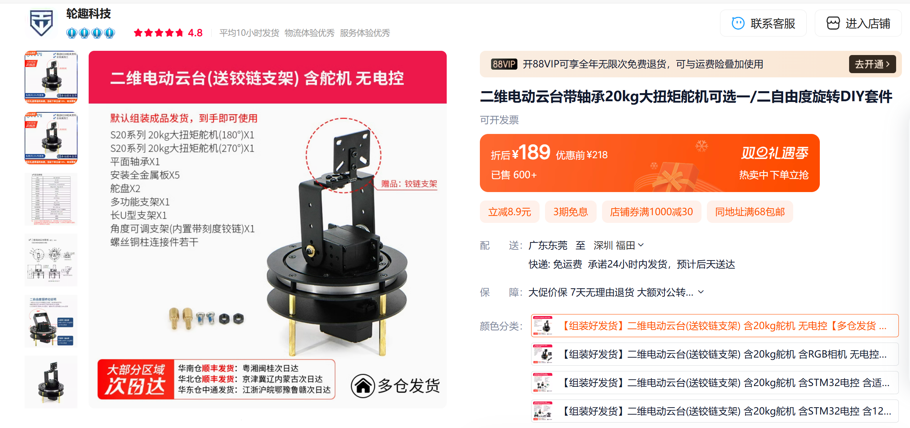
地址：https://item.taobao.com/item.htm?_u=l2t4uge5db1c&id=560120308139电动玩具枪
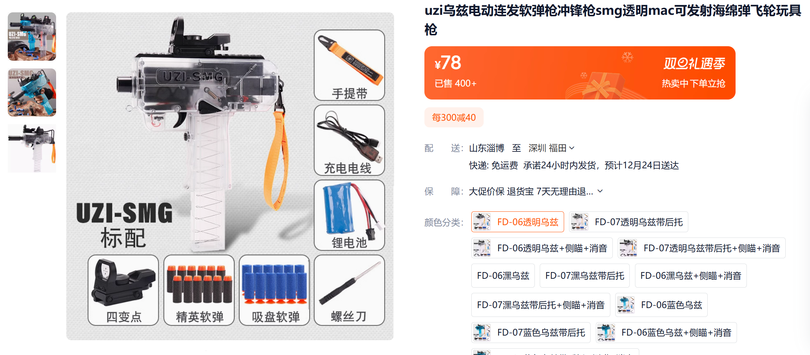
地址：https://item.taobao.com/item.htm?_u=l2t4uge530d9&id=684699922229K230-AI识别开发板
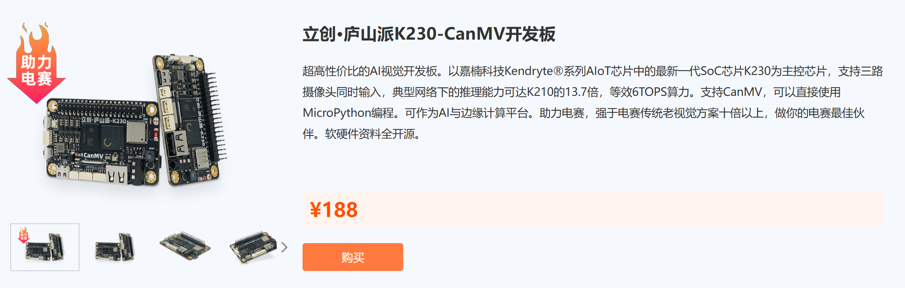
地址：https://lckfb.com/project/detail/lckfb-lspi-k230-1g-canmv?param=baseInfo辅助工具
螺丝批套装、热胶枪、杜邦线等。
硬件连接
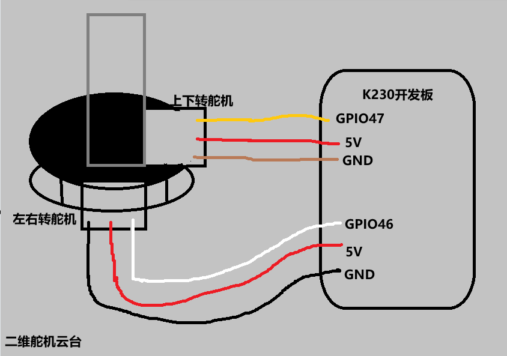
电动玩具枪也是可以通过开关控制的，只需要通过继电器的方式，连接到GPIO上是可以控制开枪的，这里我因为没有买继电器所以我就先不画。
K230排针接口示意图，点击展开
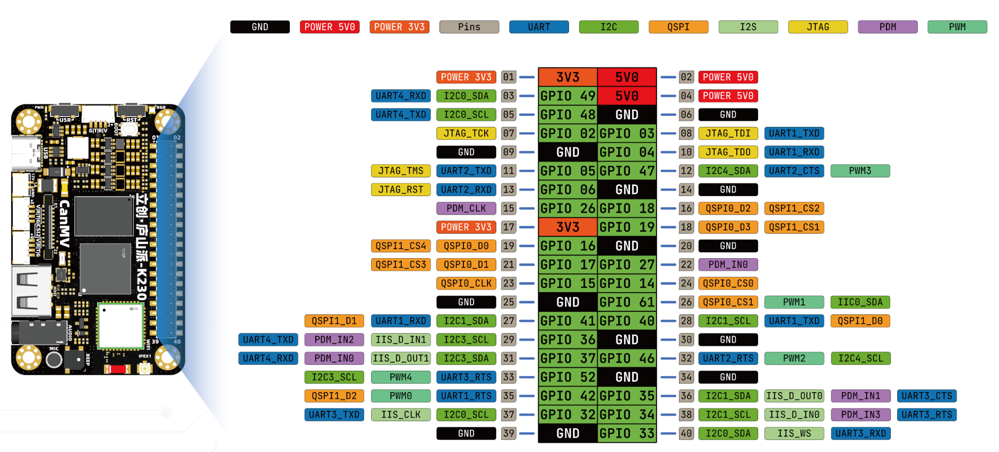
软件设计
K230的快速入门请参考：https://wiki.lckfb.com/zh-hans/lushan-pi-k230/quick-start.html
请按照上面的链接，完成开发板的组装、CanMV 固件烧录、电脑连接等操作。我在后面将不会介绍什么是 IDE ，以及如何连接。
IDE显示图像
显示图像在K230的固件中一共支持4种，分别是 HDMI 的 VGA ， HDMI 的 1080P 、LCD、IDE 等。我们先了解怎么将摄像头采集到的画面显示在 IDE 的图像缓冲区。
根据 K230 资料的Sensor例程讲解 ，提取出 摄像头的初始化 + 采集图像的代码。
# Camera 示例
import time
import os
import sys
from media.sensor import *
from media.display import *
from media.media import *
DETECT_WIDTH = 640
DETECT_HEIGHT = 480
sensor = None
try:
# 配置摄像头的图像大小
sensor = Sensor(width = DETECT_WIDTH, height = DETECT_HEIGHT)
# 摄像头传感器复位
sensor.reset()
# 设置图像是否镜像
# sensor.set_hmirror(False)
# 设置图像是否翻转
# sensor.set_vflip(False)
# 设置通道0的图像输出尺寸
sensor.set_framesize(width = DETECT_WIDTH, height = DETECT_HEIGHT)
#设置通道0输出格式为RGB565（彩色图像）
sensor.set_pixformat(Sensor.RGB565)
# Init媒体管理器
MediaManager.init()
# 传感器启动运行
sensor.run()
while True:
sensor.snapshot() #获取一帧图像
except KeyboardInterrupt as e:
print(f"user stop")
except BaseException as e:
print(f"Exception '{e}'")
finally:
# sensor stop run
if isinstance(sensor, Sensor):
sensor.stop()
os.exitpoint(os.EXITPOINT_ENABLE_SLEEP)
time.sleep_ms(100)
# release media buffer
MediaManager.deinit()
根据Display例程讲解，提取出将图像显示到 IDE 上的代码。
import time, os, gc, sys, math
from media.sensor import *
from media.display import *
from media.media import *
DETECT_WIDTH = 640
DETECT_HEIGHT = 480
try:
#配置图像显示方式为IDE显示，显示的宽高为DETECT_WIDTH+DETECT_HEIGHT，帧率100fps
Display.init(Display.VIRT, width = DETECT_WIDTH, height = DETECT_HEIGHT, fps = 100)
while True:
Display.show_image(img) #显示一个图像，这个img是摄像头采集的一帧图像
except KeyboardInterrupt as e:
print(f"user stop")
except BaseException as e:
print(f"Exception '{e}'")
finally:
# 清除显示缓存
Display.deinit()
os.exitpoint(os.EXITPOINT_ENABLE_SLEEP)
time.sleep_ms(100)
将这两个代码一整合，就得到了将图像显示到 IDE 中的代码：
import time
import os
import sys
from media.sensor import *
from media.display import *
from media.media import *
DETECT_WIDTH = 640
DETECT_HEIGHT = 480
sensor = None
try:
# 配置摄像头的图像大小
sensor = Sensor(width = DETECT_WIDTH, height = DETECT_HEIGHT)
# 摄像头传感器复位
sensor.reset()
# 设置图像是否镜像
# sensor.set_hmirror(False)
# 设置图像是否翻转
# sensor.set_vflip(False)
# 设置通道0的图像输出尺寸
sensor.set_framesize(width = DETECT_WIDTH, height = DETECT_HEIGHT)
#设置通道0输出格式为RGB565（彩色图像）
sensor.set_pixformat(Sensor.RGB565)
#配置图像显示方式为IDE显示，显示的宽高为DETECT_WIDTH+DETECT_HEIGHT，帧率100fps
Display.init(Display.VIRT, width = DETECT_WIDTH, height = DETECT_HEIGHT, fps = 100)
# Init媒体管理器
MediaManager.init()
# 传感器启动运行
sensor.run()
while True:
img = sensor.snapshot() #获取一帧图像
Display.show_image(img) #显示摄像头采集的图像
except KeyboardInterrupt as e:
print(f"user stop")
except BaseException as e:
print(f"Exception '{e}'")
finally:
# sensor stop run
if isinstance(sensor, Sensor):
sensor.stop()
# deinit display
Display.deinit()
os.exitpoint(os.EXITPOINT_ENABLE_SLEEP)
time.sleep_ms(100)
# release media buffer
MediaManager.deinit()
大家可以运行上面的例程看看，在 CanMV IDE 中会不会显示出K230开发板摄像头的画面。
颜色识别
K230是一个AI视觉芯片，根据官网资料可以知道，其可以通过摄像头识别出很多东西，比如人脸、形状、颜色、物品、水果等等，这里我比较熟练使用的是颜色识别，就先以颜色识别为例，获取指定颜色的目标方位。
而我们能够获取颜色的方位，那就可以根据官方例程推举出识别其他东西时，怎么获取对应识别目标的方位了。
根据 canMV-K230 IDE 自带的颜色识别例程，整理出关键的代码。
以下是颜色识别例程：
# Find Blobs Example
#
# This example shows off how to find blobs in the image.
import time, os, gc, sys
from media.sensor import *
from media.display import *
from media.media import *
DETECT_WIDTH = ALIGN_UP(320, 16)
DETECT_HEIGHT = 240
sensor = None
def camera_init():
global sensor
# construct a Sensor object with default configure
sensor = Sensor(width=DETECT_WIDTH,height=DETECT_HEIGHT)
# sensor reset
sensor.reset()
# set hmirror
# sensor.set_hmirror(False)
# sensor vflip
# sensor.set_vflip(False)
# set chn0 output size
sensor.set_framesize(width=DETECT_WIDTH,height=DETECT_HEIGHT)
# set chn0 output format
sensor.set_pixformat(Sensor.RGB565)
# use IDE as display output
Display.init(Display.VIRT, width= DETECT_WIDTH, height = DETECT_HEIGHT,fps=100,to_ide = True)
# init media manager
MediaManager.init()
# sensor start run
sensor.run()
def camera_deinit():
global sensor
# sensor stop run
sensor.stop()
# deinit display
Display.deinit()
# sleep
os.exitpoint(os.EXITPOINT_ENABLE_SLEEP)
time.sleep_ms(100)
# release media buffer
MediaManager.deinit()
def capture_picture():
fps = time.clock()
while True:
fps.tick()
try:
os.exitpoint()
global sensor
img = sensor.snapshot()#获取图像
# 设置颜色阈值
thresholds = [[0, 80, 40, 80, 10, 80]] # 红色的阈值，这样代码就只识别红色
# 从图像中查找颜色，根据阈值进行对比，当阈值一致时，将对应颜色的各个参数/位置等保存到blobs变量中
blobs=img.find_blobs(thresholds ,pixels_threshold= 500)
# 从blobs中遍历各个被识别到的阈值一样的颜色，将遍历到的颜色参数赋值给blob
for blob in blobs:
# 调用画矩形API，填入遍历到的颜色4个角的位置，设置矩形框的颜色为RGB的RG全色
img.draw_rectangle(blob[0], blob[1], blob[2], blob[3], color = (255, 255, 0))
# 显示图像
Display.show_image(img)
img = None
gc.collect()
print(fps.fps()) #输出帧率
except KeyboardInterrupt as e:
print("user stop: ", e)
break
except BaseException as e:
print(f"Exception {e}")
break
def main():
os.exitpoint(os.EXITPOINT_ENABLE)
camera_is_init = False
try:
print("camera init")
camera_init()
camera_is_init = True
print("camera capture")
capture_picture()
except Exception as e:
print(f"Exception {e}")
finally:
if camera_is_init:
print("camera deinit")
camera_deinit()
if __name__ == "__main__":
main()
分析：
其实主要就是 find_blobs API，它会去图像中查找我们设置的阈值的颜色，找到 一个就记录起来成为一个对象，找到一个就记一个，然后我们就可以对该颜色对象为所欲为了。
但是这个例程还是有一点问题，也不能说是问题，只是不符合我们的要求，我们的要求是只识别一个颜色。毕竟我们只有一个炮台，识别再多个也只能打一个。那么问题来了，这个例程是会将图像中识别到的颜色都画框并记录，类似以下现象：（识别浅蓝色）
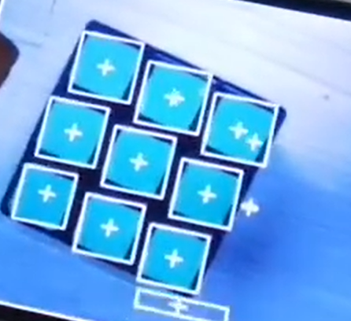
图中的白色矩形框+白色十字就是表示的识别到的颜色。现在识别出了那么多个目标，我们只有一个炮口怎么办？我们可以优先找到最大的，最近的一个开炮！，而在图像的世界里，在多个目标里，像素越多的，说明离摄像头越近！那就是最大的目标！
以下是在一堆识别到的图像中，找到最大像素的图像代码：(只写关键的了)
# 拍摄一张图片
img = sensor.snapshot()
# 查找图像中满足红色阈值（red_threshold）的区域
blobs = img.find_blobs([red_threshold], pixels_threshold=200, area_threshold=200, merge=True)
# 如果找到了至少一个blob
if blobs:
# 从blobs中找到最大像素点的blob
largest_blob = max(blobs, key=lambda b: b.pixels())
# 只对最大像素点的目标画框，框的颜色是RGB中的R（红色）
img.draw_rectangle(largest_blob.rect(), color=(255, 0, 0))
# 在框内画十字，标记中心点
img.draw_cross(largest_blob.cx(), largest_blob.cy(), color=(255, 0, 0))
# 将位置和宽高格式化为字符串
wz = "x={}, y={}, w={}, h={}".format(x_offset, y_offset, largest_blob.w(), largest_blob.h())
# 图像上显示位置和宽高信息的字符串，字符的大小是32
img.draw_string_advanced(0,0,32,wz)
上面代码中的阈值注释虽然是红色阈值，但是我实际上用的是绿色的阈值
现在我们就已经完成了目标定位的任务了，上面的代码中找到了最大像素的目标，并且输出它对于摄像头图像大小的X轴Y轴位置。
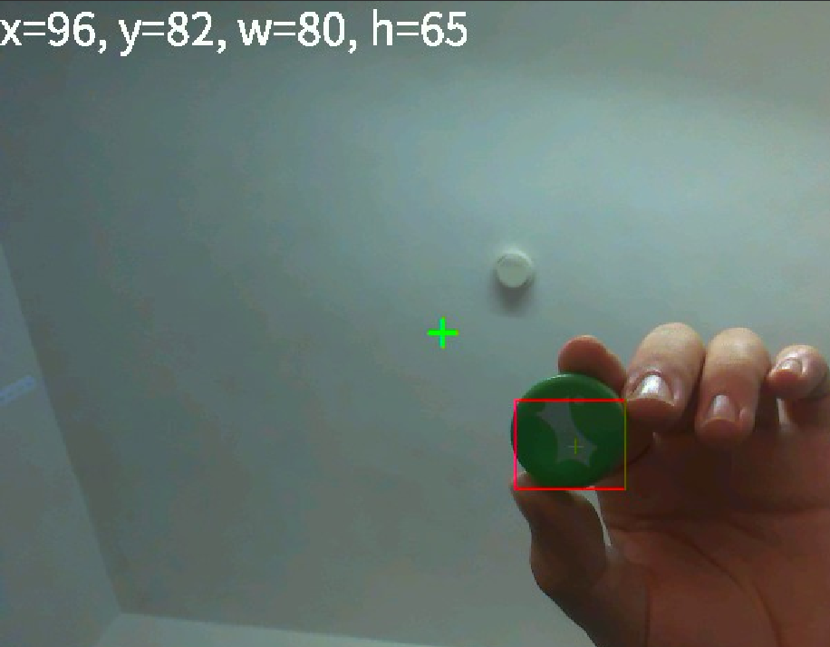
我还加了一些辅助内容，比如给图像的中心画一个绿色的十字。其他内容具体看源码 main.py。
舵机控制
舵机控制的基本原理，参考该博主的文章：舵机篇（一）舵机原理
舵机控制简单来说，就是输入一个20ms周期的PWM给他，通过调整高电平占空比实现舵机的旋转。
频率等于周期的倒数，所以
20ms周期 =1 / 20=50 Hz频率
在庐山派K230开发板引出的PWM中，PWM只有5个，分别是PWM0~PWM4。只有特定的引脚支持PWM功能，具体见下图：
在我们的舵机案例中，使用的是 GPIO46 、 GPIO47 上的，PWM2 和 PWM3。
在代码中初始化PWM参数如果下：
配置方法具体说明，请参考立创开发板wiki：庐山派开发板资料-PWM
from machine import PWM, FPIOA, Pin
# 配置排针引脚号12，芯片引脚号为47的排针复用为PWM通道3输出
pwm_io1 = FPIOA()
pwm_io1.set_function(47, FPIOA.PWM3)
# 初始化PWM参数
pwm_ud = PWM(3, 50, 50, enable=True) # 默认频率50Hz,占空比50% 3~12
# 配置排针引脚号32，芯片引脚号为46的排针复用为PWM通道2输出
pwm_io2 = FPIOA()
pwm_io2.set_function(46, FPIOA.PWM2)
# 初始化PWM参数
pwm_lr = PWM(2, 50, 50, enable=True) # 默认频率50Hz,占空比50% 2~13
pwm_lr.duty(7.5) #旋转到中间
pwm_ud.duty(7.7) #旋转到中间
在案例中，我将左右旋转的舵机命名为 pwm_lr ，上下旋转的舵机命名为 pwm_ud 。
在上面的案例中还有一个地方需要说明，我为了让舵机一上电就默认旋转到中间，设置了两个舵机动作：
pwm_lr.duty(7.5) #旋转到中间
pwm_ud.duty(7.7) #旋转到中间
这里的 7.5 指的是占空比的百分比，即7.5%的高电平占空比。我们现在知道了以下参数：
- PWM周期为
20 ms - PWM频率为
50 Hz - 高电平的占空比为
7.5%
求我们当前旋转的角度。
根据180度旋转的舵机控制原理，可以可以知道舵机旋转角度和周期的关系如下图：
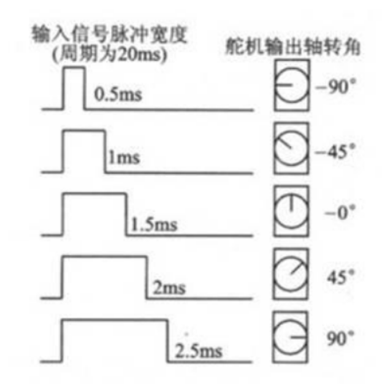
我们只要控制在20ms的周期内的高电平时间，就可以控制舵机的旋转角度。
那么获取高电平时间公式如下：
参照之前的参数 带入得到：
高电平的时间是 1.5 毫秒 。
而 1.5 ms 就是控制舵机旋转到0度。所以代码中设置 7.5% 的占空比就是让舵机旋转到中间（舵机最左是-90度，中间是0度，最右是90度）。
而上下旋转的舵机占空比，我设置为了7.7%，这个是我的测试值，测试出来的舵机旋转比较接近中间的值，大家自行测试。
现在180度的舵机，我们将其分成为 -90~90度 的范围。我们还要知道3个参数：
最大角度
90度时我们要设置多少占空比；最小角度
-90度时我们要设置多少占空比；中间角度
0度时我们要设置多少占空比；
经过我自己实测，上下动作的舵机占空比范围是 2.5~12.5% 的占空比，2.5%占空比时角度最小，12.5% 占空比时角度最大，7.5% 占空比时角度居中。
为什么不直接用理论值计算？而是要手动测试呢？
这个是因为舵机云台结构的原因，比如上下旋转的舵机我们设置旋转为了0度，但是因为结构上的原因，舵机转不到0度，它被结构框体卡死了，这个就是赌死现象：没有转到0度，舵机就一直转。
为了防止堵死的现象出现，就需要我们手动测试一个安全的旋转范围。
这里以Y轴举例(Y轴就是上下旋转的舵机)，现在Y轴的范围在摄像头采集的图像中是 0 ~ 479 个像素，屏幕的中心值就是 480/2=240 ，而Y轴的范围是从 0 开始的，所以我们得减一，屏幕的中心值就是 239 。我们以屏幕中心为参考，
当Y轴的值小于239时，我们就判断识别物体是上方；
当Y轴的值大于239时，我们就判断识别物体是下方；
当Y轴的值等于239时，我们就判断识别的物体是Y轴中心；
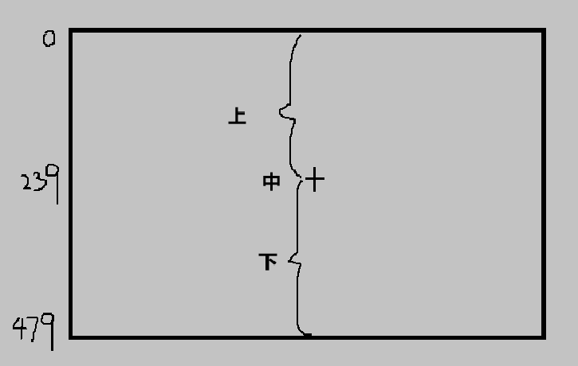
我个人觉得全部是正数的范围，不方便我们去处理舵机，0 ~ 238是上方，239是中间，240 ~ 379是下方，这样不好带入到我们后面的舵机控制中。为了更加方便我自己，我将其Y轴范围修改如下：
| 数值范围 | 说明 |
|---|---|
| -239~0 | 上方 |
| 0 | 中间 |
| 0~239 | 下方 |
这样分布后我们就知道负数是上，正数是下，我们要让舵机尽量往中间（就是0的位置）移动。
实现的代码：
实现了X轴和Y轴距离中心的位置反馈
# 如果找到了至少一个blob
if blobs:
# 找到最大的blob
largest_blob = max(blobs, key=lambda b: b.pixels())
# 画框
img.draw_rectangle(largest_blob.rect(), color=(255, 0, 0))
# 在框内画十字，标记中心点
img.draw_cross(largest_blob.cx(), largest_blob.cy(), color=(255, 0, 0))
# 计算相对于屏幕中心的X轴和Y轴的偏移量
x_offset = largest_blob.cx() - img.width() // 2
y_offset = largest_blob.cy() - img.height() // 2
# 屏幕显示位置信息和像素大小，包含正负号
wz = "x={}, y={}, w={}, h={}".format(x_offset, y_offset, largest_blob.w(), largest_blob.h())
img.draw_string_advanced(0,0,32,wz)
接下来我们来考虑一个问题：如何将Y轴的数值反馈给舵机让它按照我们设置的方向动作？
接下来了解一下我的想法，我们要让舵机往Y轴的中心 0 去动作。
当识别物体Y轴为-239 ~ 0时，我们让舵机向上，直到识别物体Y轴的数值为0；
当识别物体Y轴为0 ~ 239 时,我们让舵机向下，直到识别物体Y轴的数值为0；
现在这个Y轴就是舵机角度与目标方位的误差！我们要让误差尽量保持为0！
首先是考虑如何解决数值不对等问题。舵机的范围是 2.5 ~ 12.5，Y轴的范围是 -239 ~ +239 ，我们要将Y轴的数值压缩到 2.5 ~ 12.5 的范围。可以通过以下代码实现：
# 将数值转换为占空比的函数
def input_to_duty_cycle(input_value):
min_input = -max_duty
max_input = max_duty
min_duty_cycle = min_duty
max_duty_cycle = max_duty
# 确保输入值在允许的范围内
if input_value < min_input or input_value > max_input:
raise ValueError('输入值超出范围，应为{}到{}'.format(min_input,max_input))
# 计算输出占空比
output_value = min_duty_cycle + ((input_value - min_input) / (max_input - min_input)) * (max_duty_cycle - min_duty_cycle)
return output_value
现在解决了这个数值不对等问题，舵机的居中角度是 7.5，当识别物体在上方时，舵机的数值输出小于 7.5 ; 当识别物体在下方时，舵机的数值输出大于7.5;
GIF动图(终端输入PWM的数值)
如果我们将摄像头固定在舵机上，舵机移动的时候，我们的摄像头也移动。那按照想法就是屏幕跟舵机一起动，这样就能够稳定的固定到中心，实现了识别瞄准功能。
将这个代码直接应用到舵机上的效果:
GIF动图（没有PID的直接控制）
PID自动控制
大家根据上面的舵机控制章节，应该是可以实现最简单的舵机追踪功能，但是大家会发现有不稳定的现象，比如我举一些例子：
- 当识别目标快速运动时，舵机的运动速度不会跟着识别目标的速度而进行变化，一直保持一个速度；
- 超调现象。误差已经到0了，但是因为舵机的旋转惯性，（假设的，实际的舵机速度一直不变惯性很小）导致会超出0误差，比如-1 -> 0 -> 1，因为惯性从0到1了，又从 1 -> 0 -> -1，导致怎么都不能正常的误差为0，舵机一直抖。
这个时候我们就要了解一个最常用的控制算法：PID算法。
PID控制器，即比例-积分-微分控制器，是一种广泛应用于工业控制系统中的反馈回路控制器。它通过控制系统的偏差（设定值与实际值之间的差）来调节控制变量，使得系统达到或维持在一个预定的状态。PID控制器由三个基本控制动作组成：比例（Proportional）、积分（Integral） 和 微分（Derivative） ，下面详细介绍这三个部分：
比例（P）控制
比例控制的作用是根据设定值与实际值之间的误差（e），进行比例放大后作为控制输出。其数学表达式为：
其中，Kp 是比例增益，决定了比例控制的强度。比例控制的特点是动作快速直接，但通常会存在一个稳态误差，即系统稳定后，输出值与设定值之间仍会有一定的差距。
误差的说明，点击展开
根据设定值与实际值之间的误差（e），应该很好理解 ，我们之前的舵机控制章节就说明了误差的概念，尽可能的让误差为0。
实际值就是摄像头识别物体的方位；
设定值就是摄像头采集的图像中心；
我们要让图像中心接近物体方位。让它们的误差越来越小，直到为0。
稳态误差的说明，点击展开
即系统稳定后，输出值与设定值之间仍会有一定的差距。就是误差值明明是0了，但是实际上却是在1~2之间徘徊，就是到不了0。
积分（I）控制
积分控制的作用是对偏差进行积分运算，以消除稳态误差。积分作用考虑了误差的历史累积，其数学表达式为
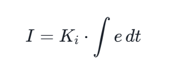
你也可以这么看这个参数：I = Ki * e的历史累积
其中，Ki 是积分增益。积分控制能够消除稳态误差，但可能会引起系统的响应速度变慢，并且可能造成系统的超调和振荡。
超调和振荡的说明，点击展开
超调 意味着系统输出超过了设定值，比如你的舵机值设定范围是2.5~12.5% ，但是PID计算的结果超过了12.5，变成15？20？100？或者更高，这个是严重的问题；
振荡 则是指系统在设定值附近反复波动，就是猛过头了，反应过激，刹车不了。
微分（D）控制
微分控制的作用是根据误差变化的速率（即偏差的微分）来进行控制，以预测误差的未来趋势。微分作用的数学表达式为：
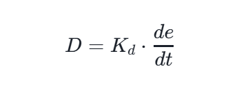
其中，Kd 是微分增益。微分控制有助于减少系统的超调和振荡，提高系统的动态性能，但它对噪声敏感，可能会放大控制信号中的噪声。
噪声的说明，点击展开
噪声就是干扰，我们用电机速度PID做一个例子，当前我们速度为0，我们设置目标速度为10，通过PID的计算，电机旋转速度会逐渐接近10，这个时候你去手动干预它，让电机不能转，这个就是干扰，你干扰了电机的运动，电机的速度变慢了，导致PID的误差在时间上一直越来越大，那么PID为了让电机速度更快接近目标，PID计算的值就越来越大，电机的旋转力度就越来越大，直到挣脱你的束缚。那对噪声敏感，表示的就是你干扰了一下，PID就崩溃了，对噪声产生过大的反应，导致控制输出不稳定。
PID控制器的基本形式
将上述三个控制作用结合起来，PID控制器的理论基本形式可以表示为：
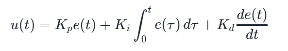
其中 u(t) 是控制器的输出，e(t) 是在时间t时的偏差。通过PID我们就能够让舵机动作的更加快速，稳定的到达我们设置的目标位置。
上面的原理部分大家看看就可以了，我们从实际应用入手。首先将以上PID数学公式转化为代码公式：
out = (Kp * p) + (Ki * i) + (Kd * d)
整理参数，参数分为静态参数和动态参数：
#静态参数
Kp = 0
Ki = 0
Kd = 0
#动态参数
i = 0 #积分I
e = 0 #当前误差
last_e = 0 #之前误差
max_out = 0 #最大输出
将代码公式一一拆分，得到下面的PID的计算函数：
def pid_calc(reference, feedback):#reference=目标位置 feedback=当前位置
last_e = e #更新之前的误差
e = reference - feedback #通过当前值和目标值计算获取新的误差
#计算比例P
p = e * Kp
#计算积分I
i += e * Ki
#计算微分D
d = (e - last_e) * Kd
#计算PID输出
out = p + i + d
#输出限制
if out > max_out:
out = max_out
elif out < -max_out:
out = -max_out
return out
注意，PID计算是要实时的，请确保PID的计算不会被阻塞太久；积分
I是累加的，必须是全局变量；
现在PID部分的代码基本完成了，接下来是最重要的如何使用PID。
静态参数的设置：
lr_kp = 0.013
lr_ki = 0.0008
lr_kd = 0.016
lr_max_out = 12.5 #最大输出
pid_lr = PID(lr_kp, lr_ki, lr_kd,10,12.5)
ud_kp = 0.013
ud_ki = 0.00091
ud_kd = 0.02
pid_ud = PID(ud_kp, ud_ki, ud_kd,10,12.5)
我将关键代码取出分析：
# 如果找到了至少一个目标色块
if blobs:
# 找到最大的目标色块
largest_blob = max(blobs, key=lambda b: b.pixels())
# 给目标色块画框标记出来
img.draw_rectangle(largest_blob.rect(), color=(255, 0, 0))
# 在标记框内画十字，标记中心点
img.draw_cross(largest_blob.cx(), largest_blob.cy(), color=(255, 0, 0))
# 计算目标色块相对于屏幕中心的X轴和Y轴的偏移量
x_offset = largest_blob.cx() - img.width() // 2
y_offset = largest_blob.cy() - img.height() // 2
# 在屏幕显示目标色块的位置信息和像素大小，包含正负号
wz = "x={}, y={}, w={}, h={}".format(x_offset, y_offset, largest_blob.w(), largest_blob.h())
# 显示字符串
img.draw_string_advanced(0,0,32,wz)
# 根据中心偏移量计算PWM的PID
# 0为目标值，x_offset表示当前设定值
pid_lr_value = pid_lr.pid_calc(0,x_offset)
pid_ud_value = pid_ud.pid_calc(0,y_offset)
''' 关键点一 '''
# 将PID值转换为舵机的范围并且输出实际的占空比
duty_lr_value = input_to_duty_cycle(pid_lr_value)
duty_ud_value = input_to_duty_cycle(pid_ud_value)
''' 关键点二 '''
# 根据计算后的占空比控制舵机动作
#pwm_lr.duty(duty_lr_value)
#pwm_ud.duty(duty_ud_value)
lr表示左右旋转的舵机，ud表示上下旋转的舵机。
大家可以在上面的代码中看到 关键点一 和 关键点二 的注释，在关键点一的位置可以通过print输出一下PID计算后的值pid_lr_value；在关键点二的位置输出实际占空比值duty_lr_value。
# 将数值转换为占空比的函数
def input_to_duty_cycle(input_value):
min_input = -max_duty
max_input = max_duty
min_duty_cycle = min_duty
max_duty_cycle = max_duty
# 确保输入值在允许的范围内
if input_value < min_input or input_value > max_input:
raise ValueError('输入值超出范围，应为{}到{}'.format(min_input,max_input))
# 计算输出占空比
output_value = min_duty_cycle + ((input_value - min_input) / (max_input - min_input)) * (max_duty_cycle - min_duty_cycle)
return output_value
PID控制器的参数调整
在实际应用中，需要对PID控制器的参数 Kp \ Ki \ Kd 进行调整，以达到理想的控制效果。这通常通过以下步骤进行：
- 先设定比例增益
Kp：使系统响应快速，但可能会出现稳态误差。 - 调整积分增益
Ki：消除稳态误差，但要注意超调和振荡。 - 最后调整微分增益
Kd：改善系统的动态行为，减少超调和振荡。
PID控制器因其结构简单、适用范围广、易于理解和实现，而被广泛应用于各种工业控制场合，如温度控制、流量控制、位置控制等。然而，对于一些复杂的系统，可能需要更高级的控制策略来获得更好的控制效果。